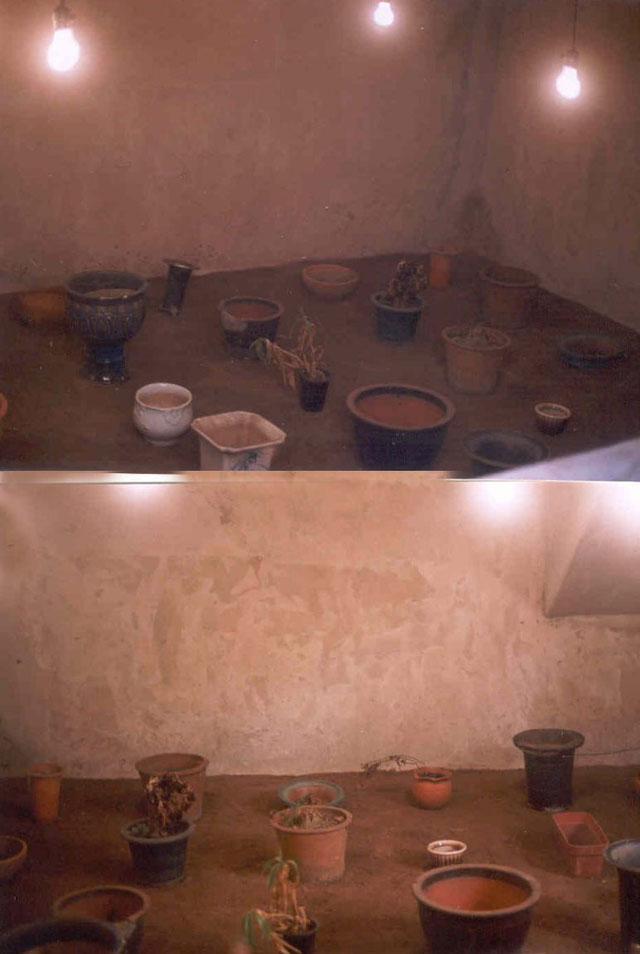
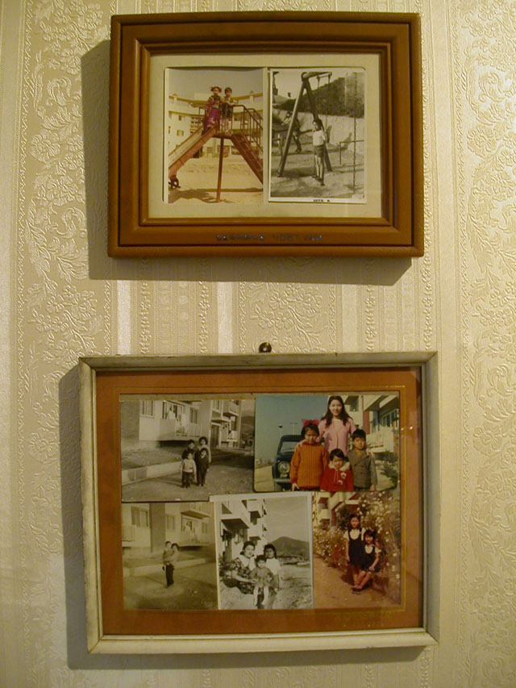
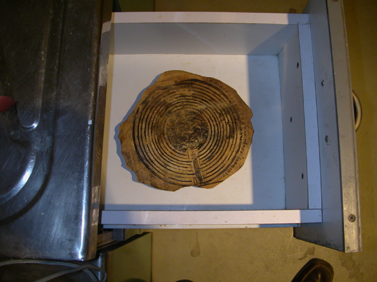

|
* 송전초등학교
유물 (잠실, 2002)

반 지하에 설치된 이 작업은 옛날 고분에서 유물이 발굴되었을 때와 유사한 느낌을 갖게 한다. 분재화분, 테라코타(흙)화분, 떡시루화분 , 플라스틱화분 등 아파트단지에서 발견한 것들을 발굴되어진 상태로 표현하는 것이다. 언젠가 사용되어졌던 가치 있는 물건이 어딘가에 잘 보관되어지고 이제 재발견/재활용/재개발되어 지기를 기다리고 있는 것이다. 아파트는 사람을 담아내고 건강한 삶을 유지하게 하듯 화분은 씨앗이 담겨지고 또한 생명을 키워내는 용기이다. 이번 재건축 프로젝트의 삶의 공간이라고 하는 의미를 축소해서 메타포적으로 표현해 본 것이다. 또한 이 시대에 무수히 만들어지고 버려지는 많은 물건들이 한 번 더 바라보자면 바로 이 시대의 유물인 것을 기억해 보자는 것이다.
* 석수동 Stone and Water
1. 아파트의 기억(액자2, 사진(흑백4, 칼라3))

아파트단지에서 오래된 두 개의 액자를 주웠다. 70년대에나 보았던 유행도 지나고 촌스러운 액자였다. 순간 잠실 4단지가 1974년에 지어졌었다는 생각과 내가 70년대에 아파트에 살았었다는 기억이 함께 스쳐 지나갔다. 우리는 아파트로 이사하기 전까지 여러 곳을 전세로 이사를 다녔다. 국민학교 3학년 때 아파트로 이사함으로써 드디어 우리가족은 집을 갖게 되었다. 나는 이곳에서 초등학교와 중학교, 고등학교 1학년까지 다시 말하면 청소년기를 보냈다. 70년대 우리의 일상놀이는 주로 땅에서 놀이하는 것이었는데 공기놀이, 땅따먹기, 핀치기, 고무줄놀이, 갱까(?), 줄넘기, 소꼽놀이 등이었다. 그런데 아파트로 이사함으로 해서 견고한 놀이기구들이 생긴 것이다. 그네, 미끄럼틀 시이소 등.. 방과후 친구들은 우리 집에 가방을 두고 놀이터에서 함께 놀았다. 그리고 몇 해 전 이 곳을 지나다 보니 아파트는 재건축 되어있었다.
2. 미궁

점점 더 비어가는 아파트단지 - 늘 이불이 널어져 있던 집, 화분이 많던 집, 플라스틱 다라이들이 쌓여있던 벼란다 등- 더 이상 특징 지울 수 없도록 아파트는 이제 낡은 유리창과 베란다 시멘트덩어리의 느낌만 커져간다. 해는 져서 어두워지고...... 찾던 물건은 없고 순간 거대한 시멘트벽조의 미로에 서 있는 듯하다
|